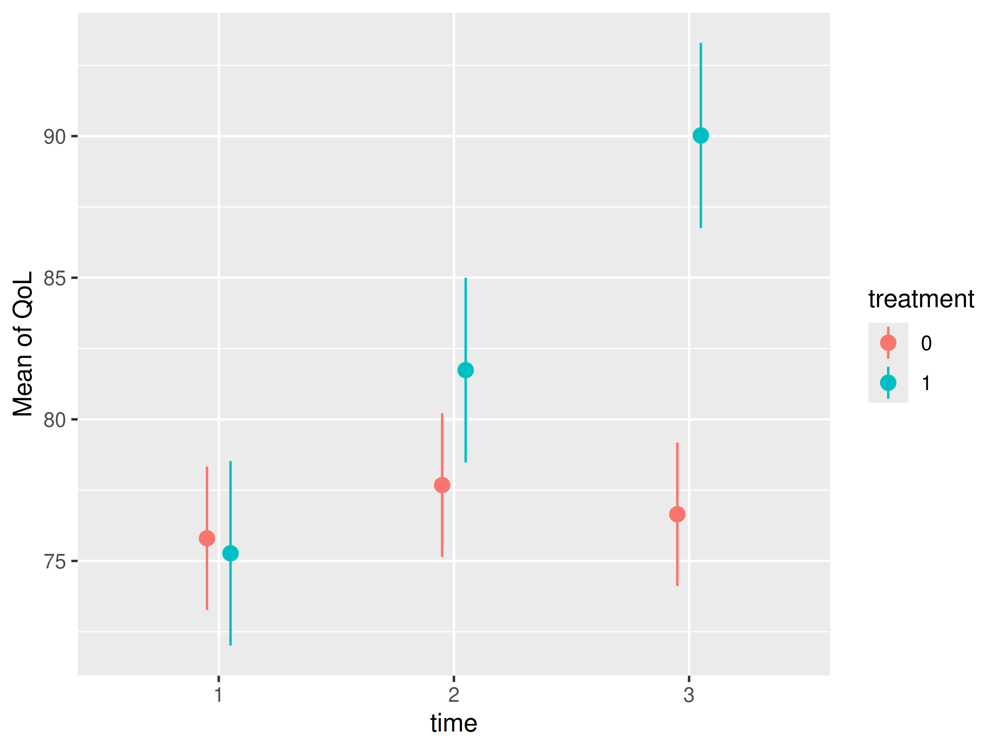

Case Study: Causal inference for observational data using modelbased
Source:vignettes/practical_causality.Rmd
practical_causality.RmdThis vignette demonstrates how to perform causal inference with
observational data using the modelbased package. While the
examples below use the terms “treatment” and “control” groups, these
labels are arbitrary and interchangeable. Causal inference can be
applied to any scenario where observations are assigned to different
conditions, regardless of whether a “treatment” in the medical sense is
involved.
The lack of randomization
Randomized controlled trials (RCTs) are frequently employed to estimate the average treatment effect (ATE), which represents the average difference in outcomes between individuals in the treatment and control groups (i.e., how would the outcome differ, on average, if all participants were treated versus if no participants was treated). In the context of RCTs, the ATE can be interpreted as a causal effect.
Estimating causal effects with observational data, where treatment and control group assignments are not randomized, presents a greater challenge due to the potential for confounding bias. In observational studies, individual characteristics associated with the outcome (e.g., age, gender, education, health status) are likely unequally distributed between the treatment and control groups. This imbalance violates a key assumption for causal effect estimation, an assumption typically satisfied by randomization in RCTs but often unmet in observational data.
Propensity scores and G-computation
Two primary methods exist for addressing the lack of randomization in observational data: propensity scores and g-computation. Regarding propensity scores, this vignette focuses on inverse probability weighting (IPW), a common technique for estimating propensity scores (Chatton and Rohrer 2024; Gabriel et al. 2024). Other established techniques involve matching (Ho et al. 2005), which are, however, beyond the scope of this discussion.
IPW assigns weights to individual observations to reflect their contribution to the outcome under the assumption of exchangeability between groups. When specific characteristics are over-represented in the treatment group, IPW assigns lower weights to these individuals, thereby adjusting for the imbalanced distribution of confounders between treatment and control groups.
G-computation, rooted in the traditional methods of stratification
and standardization, addresses confounding in observational studies by
partitioning the study population into strata, calculating
stratum-specific outcomes, and then weighting these outcomes to
represent a target population (e.g., the general population). In
modelbased, g-computation can be implemented by setting
estimate = "population". This approach directly models
counterfactual scenarios by creating copies of each observation,
effectively assigning each individual to both treatment and control
conditions. The final estimate is then derived by averaging predictions
across these counterfactual observations (Dickerman and Hernán 2020).
Both propensity score and g-computation methods offer distinct advantages and disadvantages. IPW, for instance, can be directly incorporated as weights within regression models, facilitating a straightforward interpretation of the treatment coefficient as the average treatment effect (ATE). However, deriving the ATE becomes more complex in models incorporating interaction terms or other complexities. Conversely, modelbased g-computation readily estimates the ATE even within complex model specifications. A robust approach often involves combining IPW and g-computation to achieve “doubly robust” estimation of the ATE (Chatton and Rohrer 2024; Gabriel et al. 2024). Illustrative examples will follow.
Calculating inverse probability weights
First, we create some toy data with a treatment effect that is
roughly 5 points higher than the effect in the control group. The
example data set has health related quality of life QoL as
outcome, which was measured for 188 cancer patient at three time points
(baseline, two follow-ups). The treatment variable is
simulated and not part of the original data set. Since we have repeated
measurements, we use the glmmTMB package to fit a linear
mixed model to the data.
# example
library(modelbased)
library(datawizard)
library(parameters)
data(qol_cancer, package = "parameters")
# sort and group data by patient ID, then assign each patient either to
# the treatment or control condition, with higher educated patients having
# a higher chance belonging to the treatment group
set.seed(12345)
d <- qol_cancer |>
data_arrange("ID") |>
data_group("ID") |>
data_modify(treatment = rbinom(1, 1, ifelse(education == "high", 0.72, 0.3))) |>
data_ungroup()
# create a treatment effect that increased over time
# with more improvements for higher educated patients
d$QoL <- d$QoL + rnorm(
nrow(d),
(d$treatment * d$time * 5) + ifelse(d$education == "high", 5, 0),
sd = 2
)
# convert to factors
d <- to_factor(d, c("treatment", "time"))We first look at the simple effect of treatment, which
is about 5.9.
# simple pooled effect
m1 <- glmmTMB::glmmTMB(
QoL ~ treatment + time + education + hospital + age + phq4 + (1 | ID),
data = d
)
# we don't need the full summary table,
# only the coefficient for treatment
model_parameters(m1, keep = "^treatment")
#> # Fixed Effects
#>
#> Parameter | Coefficient | SE | 95% CI | z | p
#> ----------------------------------------------------------------
#> treatment [1] | 5.90 | 1.95 | [2.08, 9.71] | 3.03 | 0.002Next, inverse probability weights are calculated. This involves
employing a regression model with the predictor of interest,
treatment, as the outcome variable. This model estimates
the probability of observed confounder variables given the treatment
assignment. For binary predictors, such as the treatment
variable in this analysis, a logistic regression model is utilized.
Potential confounders serve as independent variables in this model,
generating predicted probabilities for each observation’s membership in
either the treatment or control group. Based on these probabilities, the
IPW is calculated.
# logistic regression model
m_ipw <- glm(
treatment ~ time + hospital + phq4 + education + age,
data = d,
family = binomial()
)
# add predictions, i.e. the probability of belonging to treatment
# or control for each patient in the sample (propensity score)
d$propensity_score <- predict(m_ipw, newdata = d, type = "response")
# calculating the IPW
d$ipw <- ifelse(
d$treatment == 1,
1 / d$propensity_score, # IPW for treatment group
1 / (1 - d$propensity_score) # IPW for control group
)Calculating matching and overlap weights
The IPW may suffer from extreme values, where certain observations can get very high or low weights, because they have no good match in the other group. Extreme weights can bias estimates and increase variance, especially for the ATE. These weights may signal a need to shift focus to the overlap population, where groups are more comparable. Two common alternatives to IPW are overlap weights (OW) or matching weights (MW), the latter acting as a weighting analog to pair matching (Li and Greene 2013; Kostouraki et al. 2024). While we demonstrate the calculation of Matching Weights (MW) and Overlap Weights (OW) here, we will use Inverse Probability Weighting (IPW) for illustrative purposes in the subsequent examples.
# calculating matching weights
d$matching_weights <- ifelse(
d$treatment == 1,
min(d$propensity_score, 1 - d$propensity_score) / d$propensity_score,
min(d$propensity_score, 1 - d$propensity_score) / (1 - d$propensity_score)
)
# calculating overlap weights
d$overlap_weights <- ifelse(
d$treatment == 1,
1 - d$propensity_score,
d$propensity_score
)ATE calculated from IPW in simpler models
Now we run the same model again, including the weights. We see that the treatment effect, after weighting, is about 5.58 points, i.e. the treatment on average results in a QoL score that is 5.58 points higher in comparison to the non-treated group.
m2 <- glmmTMB::glmmTMB(
QoL ~ treatment + time + education + hospital + age + phq4 + (1 | ID),
weights = ipw,
data = d
)
model_parameters(m2, keep = "^treatment")
#> # Fixed Effects
#>
#> Parameter | Coefficient | SE | 95% CI | z | p
#> ----------------------------------------------------------------
#> treatment [1] | 5.58 | 1.93 | [1.80, 9.35] | 2.90 | 0.004Given the simplicity of the model, g-computation offers no
significant advantage in calculating contrasts between
treatment levels, as the results are equivalent to a
simpler approach.
estimate_contrasts(
m2,
"treatment",
estimate = "population",
weights = "ipw"
)
#> Counterfactual Contrasts Analysis (G-computation)
#>
#> Level1 | Level2 | Difference (CI) | p
#> -------------------------------------------
#> 1 | 0 | 5.58 (1.80, 9.35) | 0.004
#>
#> Variable predicted: QoL
#> Predictors contrasted: treatment
#> Predictors averaged: time, education, hospital (0.95), age (0.22), phq4 (-0.076), ID
#> p-values are uncorrected.ATE calculated from IPW and g-computation in more complex models
However, we have not properly modelled the longitudinal nature of our
data. Since patients’ quality of life (QoL) was measured at three
distinct time points, allowing for an examination of treatment effects
over time, we need to include an interaction between
treatment and time. This revealed a
substantially greater increase in QoL over time within the treatment
group. In such more complex modeling scenarios, g-computation becomes
particularly advantageous.
# interaction terms involved
m3 <- glmmTMB::glmmTMB(
QoL ~ treatment * time + education + hospital + age + phq4 + (1 | ID),
weights = ipw,
data = d
)
# estimated marginal means, to show how treatment
# develops over time between treatment and control conditions
estimate_means(
m3,
c("time", "treatment"),
estimate = "population",
weights = "ipw"
) |> plot()
We now see that the coefficient table is no longer helpful, because
the treatment effect cannot be isolated. If we want to know the ATE of
treatment, we need to calculate contrasts for the levels of
our treatment predictor.
# ATE no longer visible from coefficient table
model_parameters(m3, keep = "^treatment")
#> # Fixed Effects
#>
#> Parameter | Coefficient | SE | 95% CI | z | p
#> -------------------------------------------------------------------------------
#> treatment [1] | -0.53 | 2.13 | [-4.71, 3.64] | -0.25 | 0.802
#> treatment [1] × time [2] | 4.59 | 1.60 | [ 1.45, 7.74] | 2.86 | 0.004
#> treatment [1] × time [3] | 13.91 | 1.61 | [10.76, 17.05] | 8.65 | < .001
# contrasts of treatment levels, using g-computation
estimate_contrasts(
m3,
"treatment",
estimate = "population",
weights = "ipw"
)
#> Counterfactual Contrasts Analysis (G-computation)
#>
#> Level1 | Level2 | Difference (CI) | p
#> -------------------------------------------
#> 1 | 0 | 5.60 (1.84, 9.37) | 0.004
#>
#> Variable predicted: QoL
#> Predictors contrasted: treatment
#> Predictors averaged: time, education, hospital (0.95), age (0.22), phq4 (-0.076), ID
#> p-values are uncorrected.Analysing Difference in ATE
The coefficient table above shows the ATE at each time point, not the
overall ATE that we calculated with estimate_contrasts().
However, we can do the same using estimate_contrasts() and
the by argument. As we can see, results are fairly
similar.
# contrasts of treatment levels, using g-computation
estimate_contrasts(
m3,
"treatment",
by = "time",
estimate = "population",
weights = "ipw"
)
#> Counterfactual Contrasts Analysis (G-computation)
#>
#> Level1 | Level2 | time | Difference (CI) | p
#> ------------------------------------------------------
#> 1 | 0 | 1 | -0.53 (-4.71, 3.64) | 0.802
#> 1 | 0 | 2 | 4.06 (-0.12, 8.24) | 0.057
#> 1 | 0 | 3 | 13.37 ( 9.19, 17.56) | <0.001
#>
#> Variable predicted: QoL
#> Predictors contrasted: treatment
#> Predictors averaged: education, hospital (0.95), age (0.22), phq4 (-0.076), ID
#> p-values are uncorrected.But is the change in the ATE between two time points statistically significant? In other words, is the ATE increasing (or decreasing) significantly over time? We can calculate interaction contrasts (described in detail in this vignette) to check this!
estimate_contrasts(
m3,
"treatment",
by = "time",
estimate = "population",
weights = "ipw",
comparison = "(b3-b1) = (b4-b2)"
)
#> Counterfactual Contrasts Analysis (G-computation)
#>
#> Parameter | Difference (CI) | p
#> ------------------------------------------
#> b3-b1=b4-b2 | -4.59 (-7.74, -1.45) | 0.004
#>
#> Variable predicted: QoL
#> Predictors contrasted: treatment
#> Predictors averaged: education, hospital (0.95), age (0.22), phq4 (-0.076), ID
#> p-values are uncorrected.
#> Parameters:
#> b3 = treatment [0], time [2]
#> b1 = treatment [0], time [1]
#> b4 = treatment [1], time [2]
#> b2 = treatment [1], time [1]Yes, the the ATE changed statistically significant between the first and the second time point!
Even more complex scenarios!
In even more complex scenarios, g-computation remains a valuable tool for generating accurate estimates. This example compares “simple” contrasts derived from an IPW model with contrasts generated from the same model using g-computation. The results demonstrate the increased accuracy achieved by combining IPW with g-computation in such situations.
While the contrasts based solely on IPW are slightly biased with an estimated difference of 5.99, the contrasts derived from the same model using g-computation are close to the effect we found before, with an estimated difference of 5.64.
# more complex model
m4 <- glmmTMB::glmmTMB(
QoL ~ treatment * time + treatment * education + hospital + age + phq4 + (1 | ID),
weights = ipw,
data = d
)
# complex model, simple contrasts, no g-computation
estimate_contrasts(m4, "treatment")
#> Marginal Contrasts Analysis
#>
#> Level1 | Level2 | Difference (CI) | p
#> --------------------------------------------
#> 1 | 0 | 5.99 (1.93, 10.04) | 0.004
#>
#> Variable predicted: QoL
#> Predictors contrasted: treatment
#> Predictors averaged: time, education, hospital (0.95), age (0.22), phq4 (-0.076), ID
#> p-values are uncorrected.
# complex model, with IPW *and* G-computation (double-robust) is accurate!
estimate_contrasts(m4, "treatment", estimate = "population", weights = "ipw")
#> Counterfactual Contrasts Analysis (G-computation)
#>
#> Level1 | Level2 | Difference (CI) | p
#> -------------------------------------------
#> 1 | 0 | 5.64 (1.86, 9.42) | 0.003
#>
#> Variable predicted: QoL
#> Predictors contrasted: treatment
#> Predictors averaged: time, education, hospital (0.95), age (0.22), phq4 (-0.076), ID
#> p-values are uncorrected.Average treatment effect on the treated and untreated
The last example completes the “causal inference” topic by showing how to calculate the average treatment effect on the treated (ATT), and average treatment effect on the untreated (ATU).
The ATT measures how much the treatment changes the outcome for those who already received it. Likewise, the ATU estimates how much the treatment would change the outcome if it were given to those who didn’t already receive it.
library(insight)
# we need the data used to fit the model - this may not be
# identical to the original data due to case-wise deletion
model_data <- get_data(m4)
# the ATT - apply g-computation only to the subset of the treated
estimate_contrasts(
m4,
"treatment",
newdata = subset(model_data, treatment == 1),
estimate = "population",
weights = "ipw"
)
#> Counterfactual Contrasts Analysis (G-computation)
#>
#> Level1 | Level2 | Difference (CI) | p
#> -------------------------------------------
#> 1 | 0 | 5.62 (1.84, 9.39) | 0.004
#>
#> Variable predicted: QoL
#> Predictors contrasted: treatment
#> Predictors averaged: time, education, hospital (0.95), age (0.22), phq4 (-0.076), ID
#> p-values are uncorrected.
# the ATU - apply g-computation only to the subset of the conrol
estimate_contrasts(
m4,
"treatment",
newdata = subset(model_data, treatment == 0),
estimate = "population",
weights = "ipw"
)
#> Counterfactual Contrasts Analysis (G-computation)
#>
#> Level1 | Level2 | Difference (CI) | p
#> -------------------------------------------
#> 1 | 0 | 5.67 (1.89, 9.45) | 0.003
#>
#> Variable predicted: QoL
#> Predictors contrasted: treatment
#> Predictors averaged: time, education, hospital (0.95), age (0.22), phq4 (-0.076), ID
#> p-values are uncorrected.It is helpful to calculate both ATT and ATU, as they can differ substantially, indicating a potential bias in the selection mechanism of receiving a treatment or not. In our example, since the ATU is larger than the ATT, this could mean that the treated individuals are possibly less responsive to the treatment or the untreated individuals are more likely not to choose the intervention.
In ideal randomized trials, the Average Treatment Effect (ATE), the effect on the treated (ATT), and the effect on the untreated (ATU) are expected to be the same because randomization creates comparable groups. However, these values often differ in observational studies or trials with treatment non-compliance, as the groups may be systematically different due to factors like self-selection (Dong et al. 2023).
An important note on variance estimators
When performing statistical inference with inverse probability weighting (IPW), using standard variance estimators is discouraged. These estimators often fail to account for the variance introduced by the IPW itself, resulting in conservative standard errors for the average treatment effect (ATE), especially when we have observations with large or extreme weights. For the average treatment effect on the treated (ATT), standard errors can be either over- or underestimated. More robust methods are therefore recommended, such as bootstrapping, using overlap or matching weights, or calculating robust standard errors (Huber-White sandwich estimators) (Gabriel et al. 2024; Kostouraki et al. 2024; Reifeis and Hudgens 2022).
Robust standard errors can be easily computed for many models using
the vcov argument within the
estimate_contrasts() function. Package glmmTMB
supports robust standard errors via the sandwich package
since version 1.1.12, however, currently only the "HC0"
option (which is equivalent to the Huber-White estimator).
# complex model, with IPW *and* G-computation (double-robust) is accurate!
estimate_contrasts(
m4,
"treatment",
vcov = "HC0",
estimate = "population",
weights = "ipw"
)
#> Counterfactual Contrasts Analysis (G-computation)
#>
#> Level1 | Level2 | Difference (CI) | p
#> -------------------------------------------
#> 1 | 0 | 5.64 (1.76, 9.52) | 0.004
#>
#> Variable predicted: QoL
#> Predictors contrasted: treatment
#> Predictors averaged: time, education, hospital (0.95), age (0.22), phq4 (-0.076), ID
#> p-values are uncorrected.A fully Bayesian approach, as demonstrated here, also provides a robust alternative.
# Same model as m4, within a Bayesian framework, using the Stan and brms package
library(brms)
m5 <- brm(
QoL | weights(ipw) ~ treatment * time + treatment * education + hospital +
age + phq4 + (1 | ID),
refresh = 0,
seed = 123,
data = d
)
estimate_contrasts(m5, "treatment", estimate = "population", weights = "ipw")
#> Counterfactual Contrasts Analysis (G-computation)
#>
#> Level1 | Level2 | Median (CI) | pd
#> --------------------------------------------
#> 1 | 0 | 5.57 (1.79, 9.73) | 99.80%
#>
#> Variable predicted: QoL, ipw
#> Predictors contrasted: treatment
#> Predictors averaged: time, education, hospital (0.95), age (0.22), phq4 (-0.076), IDConclusion
This vignette explored the estimation of average treatment effects (ATEs) from observational data, focusing on the application of inverse probability weighting (IPW) and g-computation. While both methods address confounding bias inherent in non-randomized studies, they offer distinct strengths. IPW provides a straightforward approach for incorporating weights into regression models, simplifying ATE interpretation in basic models. However, g-computation excels in more complex scenarios, such as those involving longitudinal data and interaction terms, where isolating treatment effects becomes challenging.
Our examples demonstrated the utility of both methods. Specifically,
we showed that while IPW effectively estimates the ATE in a simple
model, g-computation becomes essential when modeling the interaction
between treatment and time. IPW performs well
with rare outcomes, whereas g-computation is better suited for studies
with imbalanced treatment group sizes. Therefore, combining IPW with
g-computation, as illustrated in our last examples, offers increased
accuracy, highlighting the benefits of this “doubly robust” approach for
estimating ATEs in complex models.
Combining IPW and g-computation doesn’t introduce any additional bias and hence has no negative effects. While IPW alone can sometimes be less accurate than g-computation, particularly when g-computation is feasible, the most reliable estimates are achieved by using both methods together. Therefore, we recommend their combined use.